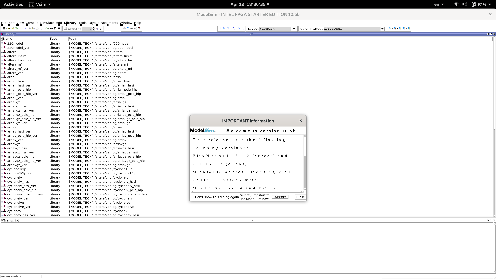

A couple of days ago a new release of Ubuntu, Ubuntu 19.04 Disco Dingo was released. On my personal laptop I follow the non-LTS line, which brings me cool features and updated programs (e.g. Python 3.7, GCC 8.3, ...) out-of-the-box.
Unfortunately, because the libraries are updated, the update process causes some programs to become broken. Mentor Graphics ModelSim is for example one of the tools which required some tweaks to make it work on Ubuntu 19.04.
Described here are the steps which made ModelSim to work on Ubuntu 19.04.
Please note: according to Intel® FPGA Software Installation and Licensing, ModelSim - Intel FPGA Edition officially supports RHEL 5, 6 or 7 and Windows. Ubuntu is officially not supported.
Initial attempt
I have started with a fresh installation of ModelSim*-Intel® FPGA Starter Edition Software from Quartus 19.1 package.
When running vsim from intelFPGA/19.1/modelsim_ase/bin I get the
following error message:
$ ./vsim
Error: cannot find "./../linux_rh60/vsim"
$
From the path it is clear that ModelSim thinks it is running on RHEL 6. As
described in an extensive Wiki entry on Altera
software on Arch Linux Wiki,
one needs to modify vco file and downgrade freetype library.
Once this is settles (by the way, this used to be enough to make ModelSim work on Ubuntu 18.10) we get the following error:
$ ./vsim
Reading pref.tcl
./../linuxaloem/vish: symbol lookup error: /usr/lib/i386-linux-gnu/libfontconfig.so.1: undefined symbol: FT_Done_MM_Var
** Fatal: Read failure in vlm process (0,0)
This message is new and it required me to do some investigation to get it fixed.
Downgrading fontconfig
From the error message it is clear that libfontconfig.so tries to use function
called FT_Done_MM_Var and is unable to find it.
To investigate further I cloned fontconfig source code from:
https://gitlab.freedesktop.org/fontconfig/fontconfig.git
A quick grep finds the following instances of the symbol in question:
$ grep -rn FT_Done_MM_Var .
./README:119: Use FT_Done_MM_Var if available
./src/fcfreetype.c:2261: FT_Done_MM_Var (ftLibrary, mm_var);
./configure.ac:321:AC_CHECK_FUNCS(FT_Get_BDF_Property FT_Get_PS_Font_Info FT_Has_PS_Glyph_Names FT_Get_X11_Font_Format FT_Done_MM_Var)
One git blame after we find the following commit which introduced this function:
commit 94683a1255c065a7f8e7fadee9de605f3eaf9ac7
Author: Behdad Esfahbod <behdad@behdad.org>
Date: Mon Jan 8 09:55:41 2018 +0000
Use FT_Done_MM_Var if available
And then we can find out that release 2.12.92 is the last one which does not contain this change.
I checked out the code from release 2.12.92:
git checkout -b 2.12.92 2.12.92
Installed the libraries needed:
sudo apt install libxml2-dev:i386 uuid-dev:i386
And used the following commands to compile and install an older version
of fontconfig library:
aclocal -I m4
autoconf
libtoolize
./autogen.sh
CFLAGS=-m32 LDFLAGS=-L/home/jan/local/packages/freetype-2.4.7-32bit/lib ./configure --prefix=/home/jan/local/packages/fontconfig-2.12.92-32bit --enable-libxml2
make
make install
Changes to vco
Finally, I needed to change vco in intelFPGA/19.1/modelsim_ase/bin folder
to load the freshly-recompiled libraries:
$ diff vco vco.orig
11,13d10
< # added for Ubuntu 19.04: recompiled libraries
< export LD_LIBRARY_PATH=/home/jan/local/packages/freetype-2.4.7-32bit/lib:/home/jan/local/packages/fontconfig-2.12.92-32bit/lib:$LD_LIBRARY_PATH
<
16,17c13
< # changed for Ubuntu 19.04: force 32-bit mode
< mode=${MTI_VCO_MODE:-"32"}
---
> mode=${MTI_VCO_MODE:-""}
213,214d208
< # added for Ubuntu 19.04: if kernel version 5.x then use linuxaloem
< 5.[0-9]*) vco="linuxaloem" ;;
Conclusion
Ta-da, ModelSim now works on Ubuntu 19.04. The font styles are a little bit broken, but being humble is a good characteristic, and we won't ask too much.
